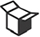
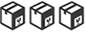
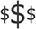

|
| WHY? |
Justificativas | O que é a Justificativa? | Coloque os problemas que a organização atualmente enfrenta e quais necessidadesnão são atendidas no momento.Exemplo: projetos fora do padrão, insatisfação do patrocinador, gerentes deprojetos gastam a maior parte do tempo apagando incêndio, perda de faturamento,perda de cliente. | | Falta de previsibilidade na execução da ATAS | As ATAS são celebradas e não há meios de controle centralizado do que foi contratado, o que foi executado, saldo remanescente etc. |
Dificuldade para gerir os requisitos da ATA | Os termos de referência que originam as ATAS estabelecem uma série de requisitos. Alguns desses requisitos são de natureza global, ou seja, afetam a vários contratos. A falta de ferramenta para a gestão desses requisitos trás fragilidade na gestão da ATA. | Falta de visão dos contratos celebrados com as fábricas | Atualmente, não há um controle dos contratos celebrados com as fábricas de software e as secretarias dos município. | Falta de visão de entregas integradas de Fábrica de Desenvolvimento e Métrica | As fábricas de métricas e software demanda uma visão integrada de suas atividades. O serviços executados pela fábrica de métricas pode demandar uma relação com a fábrica de software quando não for medição individual de legado ou de desenvolvimento interno. | Falta de visão das entregas previstas | A falta ou precariedade de planejamento das entregas previstas impedem as áreas dos envolvidos (CONTRATANTE, CONTRATADA e RESPONSÁVEL TÉCNICA) de efetuarem um plano de alocação de equipes. | Falta de visão das entregas realizadas | As entregas de software e artefatos obrigatórios não apresentam visibilidade para todos os envolvido, prejudicando a gestão e trazendo fragilidade ao processo de contratação por fábrica |
|
 Objetivo SMART Objetivo SMART
| O que Objetivo SMART? | Coloque nesse post-it o objetivo do projeto de maneira que fique “smart”. Issosignifica:Specific (específicos)Measurable (mensuráveis)Attainable (atingíveis)Realistic (realistas)Time Bound (temporizáveis)Exemplo: implantar o escritório corporativo de projetos na empresa Acme,responsável por padronizar a gestão de projetos, capacitar os gerentes de projetos nasua metodologia, dar suporte aos projetos estratégicos da empresa até 25 de janeirode 2014, gastando até R$ 80 mil. |
| Implantar ferramenta de gestão das fábricas de software | A ferramenta deverá permitir a gestão de diversos fornecedores que prestam serviço de desenvolvimento de software para a PCRJ.A primeira fase do projeto, definição do backlog (primeiras 3 releases) e roadmap do produto deverá finalizar até 31/12/2016. |
|
BENEFICIOS FUTURO
| O que são Benefícios Futuro? | Deve descrever o que a empresa conquistará após a implantação do projeto.Exemplo: aumento de faturamento, ampliação da satisfação do cliente, redução decustos, melhor qualidade de vida para o gerente de projeto. |
| Visão consolidada de todos os contratos | A ferramenta poderá prover uma visão de todos os contratos em andamento, prazos para encerramento, saldos de pontos de função utilizados e a utilizar etc. |
Melhoria no trabalho do líder técnico | Com as ferramentas de gestão disponível, os líderes de projeto terão um apoio em atividades que não são inerentes ao produto, mas que tem grande impacto na qualidade da gestão do contrato. | Melhor controle dos aceites efetuados | A ferramenta deverá suportar a emissão dos TAPs (Termos de Aceite de Produtos) permitindo uma visão transparente e centralizada de todos os aceites realizados pelos lideres de projeto. | Melhor prestação de contas junto aos órgão de controle | Com a ferramenta implantada, as entregas realizadas, prazos determinados no TR, indicadores de desempenho, trarão mais transparência e segurança para prestação de contas perante o TCM, CGM, Auditorias Internas etc. |
|
|
| WHAT? |
PRODUTO
| O que é o Produto? | O produto é o resultado final do projeto. Um projeto pode também gerar um serviçoou um resultado único.Exemplo: escritório implantado e operando na empresa Acme. | | Ferramenta implantada | A ferramenta implantada é o produto esperado. A primeira fase se limita em um backlog suficiente para 3 (três) releases e o roadmap do produto. |
|
REQUISITOS
| O que são Requisitos? | Definem a qualidade que o produto (serviço/resultado) precisa apresentar para tervalor para o cliente.5 - Requisitos:Exemplo: deve ter fluxograma da gestão de projetos, deve ter a metodologia padrãode gestão de projetos, deve ser aplicado o treinamento padrão da metodologia degestão de projetos, deve ser implantado o software Project Builder, deve ter uma festade encerramento no final do projeto. |
| Gerir diversas ATAS | A ferramenta deverá permitir a gestão de diversas ATAS |
Gerir diversos contratos | A ferramenta deverá gerir diversos contratos, entre fornecedores e secretarias, que serão originados das ATAS de Registro de Preços. | Gerir requisitos globais | Os requisitos globais poderão ser registrados na ferramenta, mantendo um corretos rastreamento com o instrumento de origem (TR) e permitindo acompanhar o cumprimento dos mesmos. | Gerir diversas Ordens de Serviço | A ferramenta deverá gerir as Ordens de Serviço (OS) que estarão relacionadas a cada Contrato celebrado entre secretarias e fornecedores. | Permitir o aceite ou rejeição entregas de uma OS | As Oss podem entregar várias histórias de usuários e diversos produtos (artefatos do PGA). A solução deve permitir aceitar ou rejeitar essa entrega | Gerir emissão de TAPs | Os TAPs (Termo de Aceite de Produto) deverão ser realizados pela ferramenta, permitindo o líder justificar o aceite de determinada Ordem de Serviço, anexando documentos pertinentes (ex. parecer técnico de contagem de ponto de função) e liberando a OS para o gestor avaliar a pertinência de liberar o pagamento. | Prover indicadores de desempenho | A ferramenta deverá prover, baseado nos aceites de produtos, uma visão de todos os indicadores previstos nos contrato celebrados.No primeiro momento, os indicadores priorizados serão da ATA de RP gerenciada pela IPLANRIO. Num futuro, poderá ser desenvolvido uma forma genérica de cadastrar e apurar os indicadores diversos se houver. | Prover camada de integração | A ferramenta deverá integrar, por API por exemplo, com sistemas dos fornecedores para manter os processos atualizados com o menor intervalo possível. |
|
|
| WHO? |
STAKEHOLDERS
| O que são Stakeholders? | Podem ser stakeholders externos ou fatores externos.Stakeholders externos – são os envolvidos que não estão subordinados ao gerente deprojeto.Fatores externos – que podem afetar o projeto e devem ser listados.Exemplo: consultoria em gestão de projetos, fornecedor do Project Builder, diretoriasda Acme, gerentes funcionais da Acme. | | CTA - Coordenadoria Técnica de Atendimento | A CTA é responsável pela liderança técnica dos projetos e será um dos principais usuários da ferramenta quando implantada. |
GAQ - Gerência de Aquisição de Sofwatre | A GAQ é responsável pelo planejamento, seleção e gestão das contratações de fábrica de software. | GDE - Gerência de Desenvolvimento | A GDE é a gerência responsável por prover os recursos necessários para o desenvolvimento do produto. O time de desenvolvimento deverá ser alocado por esta gerência. |
|
EQUIPE
| O que é Equipe? | Todos os participantes que são responsáveis por produzir as entregas do projeto.Exemplo: gerente do projeto, analista do PMO, consultor de projeto, analista deprocessos, instrutor. |
| Mônica (Gerente de Aquisição) | Responsável por articular todas as ações relacionadas a aquisição de software, definir processos e práticas, escolher os modelos de contratação e articular com os demais envolvidos nas contratações. |
St. José Renato da Sustentação (consultor de aquisição) | O consultor de aquisição é o especialista que conhece os processos que envolvem a gestão da aquisição de software e pode definir uma série de requisitos para a ferramenta. | Weslley (consultor de aquisição) | O consultor de aquisição é o especialista que conhece os processos que envolvem a gestão da aquisição de software e pode definir uma série de requisitos para a ferramenta. |
|
|
| HOW? |
PREMISSAS
| O que são Premissas? | São suposições dadas como certas sobre o ambiente e os fatores externos aoprojeto, que não estão sob controle do gerente de projeto.Exemplo: 90% dos gerentes de projetos vão aderir ao projeto, o Project Builder seráimplantado até 24 de dezembro de 2013. | | Haverá alocação de time Ágil para desenvolvimento | Um time de desenvolvedores estará disponível por 12 sprints para o desenvolvimento das 3 (três) primeiras releases.Esse trabalho é a segunda fase do projeto e deverá ser realizado em 2017. |
|
GRUPO DE ENTREGAS
| O que são Entregas? | São os componentes concretos, mensuráveis e tangíveis que serão gerados peloprojeto.Exemplos: Estratégia de implantaçãoApresentação do ProcessoProcesso de GPAplicação do TreinamentoImplantação do PBFesta de Encerramento | | Plano de Gerenciamento de Projeto | O PGP deverá ser entregue. |
Backlog do produto | O backlog do produto, com a priorização realizada e o refinamento dos itens mais importantes (primeira release) deverá ser entregue. | Roadmap do produto | O Roadmap do produto, com previsão de lançamento das 3 (três) primeiras releases deverá ser entregue. | Software implantado | A ferramenta de gestão, ou seja, o software implantado ao menos no ambiente de homologação deverá ser entregue em 2017. Em 2016 somente as demais entregas serão realizadas. |
|
RESTRICOES
| O que são Restrições? | Nesse quadro, serão descritas as limitações do projeto, de qualquer natureza e origem,que impactam no desenvolvimento do trabalho da equipe.10 - Restrições:Exemplo: os gerentes funcionais não podem se ausentar por mais de 8 horas de suasfunções, não poderá ser gasto mais de 20% do orçamento com serviços externos, aequipe de TI interna não dará suporte à nova aplicação. |
|
| HOW MUCH & WHEN? |
RISCOS
| O que são Riscos? | Riscos são eventos futuros e incertos que têm relevância para o projeto. Nessa etapaidentificamos e analisamos os riscos do projeto e, para os mais relevantes, devemosbuscar e implantar as respostas.11 - Riscos:Exemplo: gerência funcional não adere ao método de GP, baixa qualidade dotreinamento realizado internamente, atraso na implantação do software. | | Não ter time disponível para desenvolvimento | Por falta de priorização do projeto pela alta administração, poderemos não ter time disponível para desenvolvimento do produto, acarretando em atraso ou até mesmo cancelamento do projeto. |
|
 LINHA DO TEMPO LINHA DO TEMPO
| O que é linha do Tempo? | Nesse momento, definimos quando vão ocorrer as entregas do grupo de entregas. Ametodologia PM Canvas sugere que o prazo do projeto seja dividido em 4 períodosdefinidos pela equipe do projeto. | | 2016 - Pacote 1 | Entrega de PGP, Backlog e Roadmap |
2017 - R1 | Software rodandoRelease 1 lançada conforme definido no Roadmap | 2017 - R2 | Release 2 lançada conforme definido no Roadmap | 2017 - R3 | Release 3 lançada conforme definido no Roadmap |
|
CUSTOS
| O que são os Custos? | Quanto será gasto para concluir esse projeto? É importante distribuir os custos pelosgrupos de entregas pré-definidos.Exemplo:13 - Custos:1 – R$ 8002 – R$ 2 mil3 – R$ 5 mil4 – R$ 1,2 mil5 – R$15 mil6 – R$ 4 mil | | PCS - Progressão por Mérito | O time de projeto vai ganhar a(s) progressão(ões) por mérito atrasada(s) e cada membro estará no TOP 10% da DSI em 2016 e 2017. |
Agile Brazil | O time de projeto vai, completo, para o Agile Brazil 2016 | Almoço mensal | O time de projeto será convidado para um almoço (em ótimo restaurante) em todos os meses até dezembro. O almoço será pago pela GAQ ou seu/sua responsável. |
|